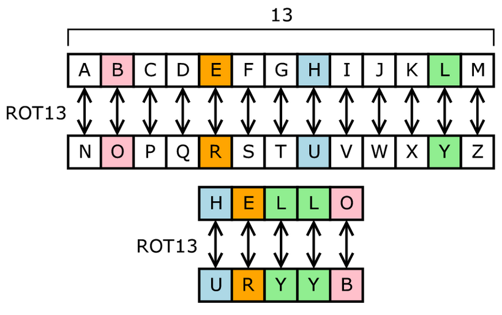

ROT-13 (ou rot13, rot-13, Rot13, etc) é o nome que se costuma usar para um procedimento simples mas eficaz para garantir que textos eletrônicos não sejam lidos por distração ou acidente. ROT-13 vem do inglês, ROTate by 13 places, "ROTacionar 13 posições".
Como há 26 letras (2 × 13) no alfabeto latino básico, o ROT13 é sua própria inversão; isto é, para desfazer ROT13, o mesmo algoritmo é aplicado, então a mesma ação pode ser usada para codificação e decodificação.
Especificamente, a cifra ROT-13 tem se mostrado útil principalmente para proteger endereços de correio eletrônico (evitando SPAM, o envio de mensagens não solicitadas) e para "proteger" mensagens que o remetente pode preferir não ler - comentários sobre livros, filmes, ou séries.
Um detalhe importante: não há qualquer diferença entre o procedimento para codificar um texto em ROT-13 e o procedimento para decodificá-lo; simplesmente aplicamos o mesmo procedimento uma segunda vez.
Quer aprender mais sobre criptografia?